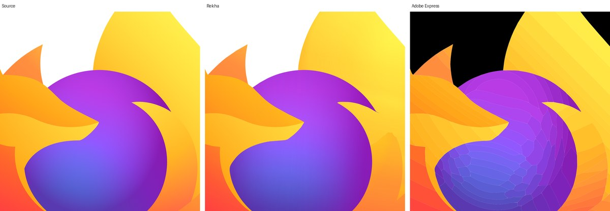
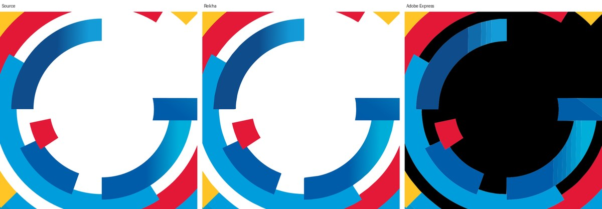
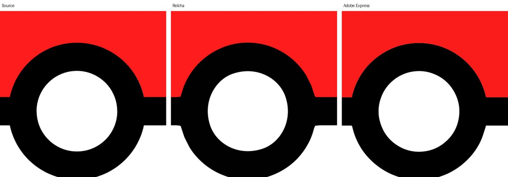

Raster in. Clean SVG out.
Rekha traces PNG and JPEG logos, icons and artwork into compact SVG, and fits shading as real gradient fills instead of flat tiles. Run it in your browser, where your image never leaves your machine, or on the command line, from Go and as a service.
Free for open source under AGPL-3.0. Commercial licences for closed products.
Side by side with other tracers
Three logos, each a 2048-pixel PNG, traced with each tool's default settings and rendered back at source size. PSNR is measured over the logo's own pixels, so higher is closer to the source and the transparent background counts for nothing. Fewer paths and bytes mean an SVG that is easier to edit and faster to load.
| Logo | Tool | Paths | Size | PSNR |
|---|---|---|---|---|
| Browser mark, radial shading and translucent layers | Rekha | 33 | 32 kB | 34.8 dB |
| Adobe Express | 197 | 325 kB | 28.7 dB | |
| VTracer | 7 | 30 kB | 17.2 dB | |
| Letter G, concentric ramps | Rekha | 16 | 14 kB | 32.6 dB |
| Adobe Express | 49 | 78 kB | 24.0 dB | |
| VTracer | 15 | 59 kB | 23.9 dB | |
| Ball, flat colours and one highlight | Rekha | 5 | 4 kB | 33.3 dB |
| Adobe Express | 5 | 12 kB | 26.6 dB | |
| VTracer | 7 | 20 kB | 30.5 dB |
Adobe Express is the commercial image-to-SVG tool, exported on 11 November 2026. VTracer 1.0.0-alpha.4 is the open-source colour tracer. Potrace, the classic open-source tracer, traces black and white only, so it has no result on colour art. Method and full figures: bench/results.



How it works
Rekha reduces the image to a few colours, finds the regions and fits each boundary with cubic curves that follow the anti-aliasing. Where neighbouring bands shade into each other it merges them and fits one gradient, linear or radial, with translucent layers on top for highlights and vignettes. The output is a small SVG that scales, edits and renders the same everywhere.
The same engine runs in the browser, on the command line, as a Go library and as an HTTP service. Pure Go, no cgo, one dependency.
Ways to use it
In the browser
Open the playground, drop an image, wipe between the source and the SVG, tune the controls and download. Everything runs in the page; nothing is uploaded.
On the command line
Download a binary for Linux, macOS, Windows or FreeBSD, a .deb, .rpm or .apk package, or install with Go 1.26 or later. Then point it at an image. Each preset seeds every other setting; any flag you give overrides it. Output goes next to the input unless you say otherwise.
brew install --cask vexyl-ai/tap/rekha # macOS and Linux
scoop install rekha # Windows, after adding the vexyl-ai bucket
go install github.com/vexyl-ai/rekha/cmd/rekha@latest
rekha logo.png # black and white, writes logo.svg
rekha --preset poster --refine logo.png # flat colours, refined curves
rekha --preset photo --gradients artwork.jpg # smooth shading as gradient fills
rekha --preset poster --hierarchical cutout --stroke 0.5 logo.png
rekha -o out.svg --threshold auto scan.png # automatic threshold, named output
rekha --mode polygon - < in.png > out.svg # stdin to stdout, straight lines
rekha --help # every flag, range and defaultFrom Go
One call traces an image into paths and gradients; a second writes the SVG. Segmentation and curve fitting are separate steps, so a cached segmentation can be re-fitted with new curve options.
import "github.com/vexyl-ai/rekha"
o := rekha.PresetOptions(rekha.PresetPhoto)
o.Gradients = true
res, err := rekha.Trace(img, o) // img is an image.Image
if err != nil {
return err
}
err = res.WriteSVG(out, o) // out is an io.WriterAs a service
The same binary that serves this site answers POST /v1/trace with an image and the CLI's options as form fields, with caps on size and time so one client cannot exhaust the host.
docker run --rm -p 8080:8080 ghcr.io/vexyl-ai/rekha # or: go install github.com/vexyl-ai/rekha/cmd/rekha-serve@latest
curl -F image=@logo.png -F preset=poster -F refine=true localhost:8080/v1/trace > logo.svgFull flag table, library documentation and the HTTP API are in the README and pkg.go.dev.
Who it's for
Designers
Rebuild a logo from the only copy left, a PNG, and get editable paths and gradients rather than a bitmap wrapped in an SVG. Try it in the playground; nothing is uploaded.
Developers
Call it from Go, run the CLI in a build step, load the WebAssembly module in a page or post an image to the HTTP endpoint. Every output is deterministic and covered by tests.
Companies
Put tracing inside your own product or service. A commercial licence lets you do that without opening your source, and it funds Rekha's development.
Free to use, paid to embed
Open source, AGPL-3.0
Use Rekha, change it and ship it at no cost, as long as what you ship stays open under the same licence, including when it is offered over a network. The source, the tests and the benchmarks are all on GitHub.
Commercial licence
For a closed product or service, a commercial licence removes the AGPL obligations. Terms are simple and priced for the size of the deployment. Ask by opening an issue or by writing to the author on LinkedIn.